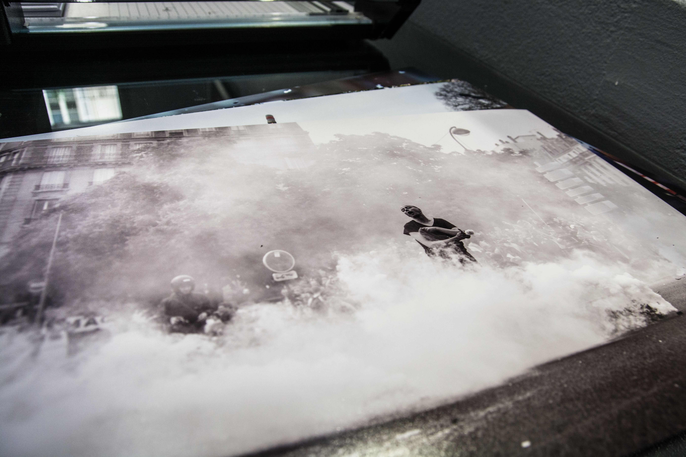
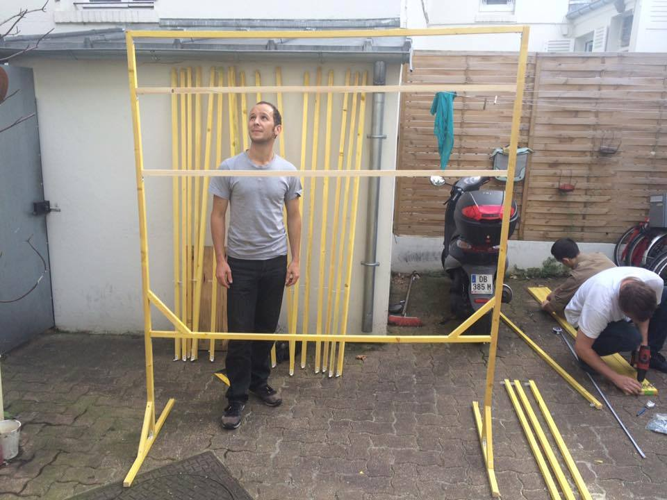
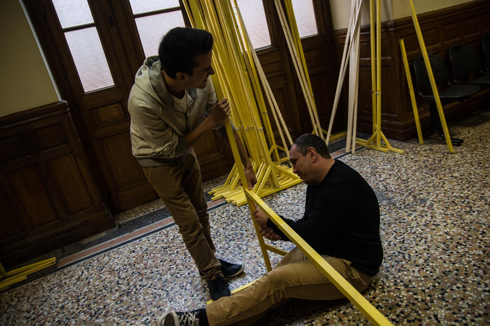
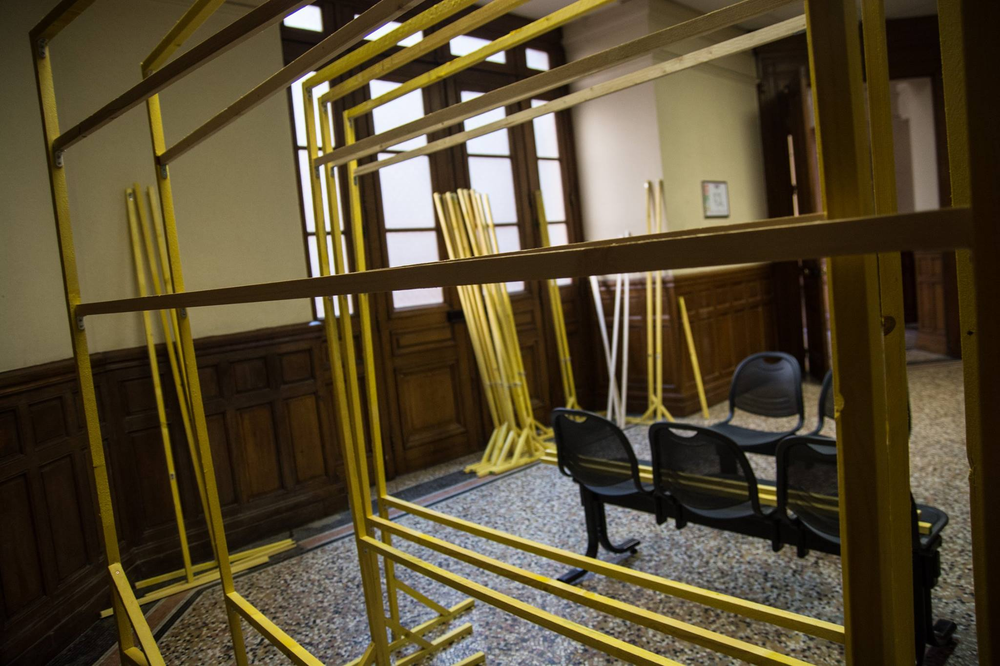

All practical informations are also available on Facebook.
Photographers views : A 4 month struggle against the labour law
We are thirty one photographers. Thirty one commited photographers. We have different statuses, motivations and photo skills. We met each other during protests against the recent labor reform, known as law "El Khomri" and felt like gathering around this common project. Some started taking photos from the very begining of the current movement, others joined as protesters and ended up taking photos, some started as photographers and ended up protesting as well, and many had drastically different paths. Ultimately, we all grew with this movement, evolved with it, and that's what matters. Thirty one photographers, as much paths and more importantly thirty one different points of view, all supported by our commitment. Taking part in protests necessarily meant undergoing repression side by side with all the other actors in this movement. We got gazed, beaten up, arrested, injured, our gear got confiscated or broken, and this in more situations than we can count.
We tried to bear witness of this movement in its evolution, its forms of actions and resistance. Many questions raised along the way: why, how, but also for whom? Then, because our photos shall not stay on our computers, facebook pages and websites, but should definitely return to all actors of this movement, we decided to organize this first collective exhibition. This way those pictures - our pictures as photographers but also as subjects - will keep living, but also - actually mostly - to thank all the people commited in this movement, which hopefully will also stay alive.
Exhibition
Paris : From september 25th til october 1st at the Bourse du travail, 3 rue du château d'eau (Subway station "République"). Th exhibition is visible from monday til friday between 8am and 10:30pm and on saturday between 8am and 5:30pm.
Opening on september 24th from 2:30pm til 5pm.
Free Entrance.
Photographers
Alain Pitton, Alhil Villalva, Anthony Deperraz, Arnaud Gastaut, Arnaud Leclercq, Philemon Barbier, Boite Noire, Bsaz, Clemence Drack, Davide Weber, Etienne Bordet, Francis Azevedo, Guillaume Salmon, Jean Segura, Kra Ken, Lily Manapany, Loscotalos, Louis Rochette, Marion Vacca, Martin Noda, Maxime Reynié, Nicola Galvagni, Patrice Gravoin, Paul Roquecave, Pierre Gautheron, Pierre Raimbault, Rocky Mattiano, Seka, Teresa Suarez, Vincent Rispe Burret, Vitalia
Meanwhile...
We are still preparing the exhibition and now we have the prints!



Panels are ready for the exhibition !


